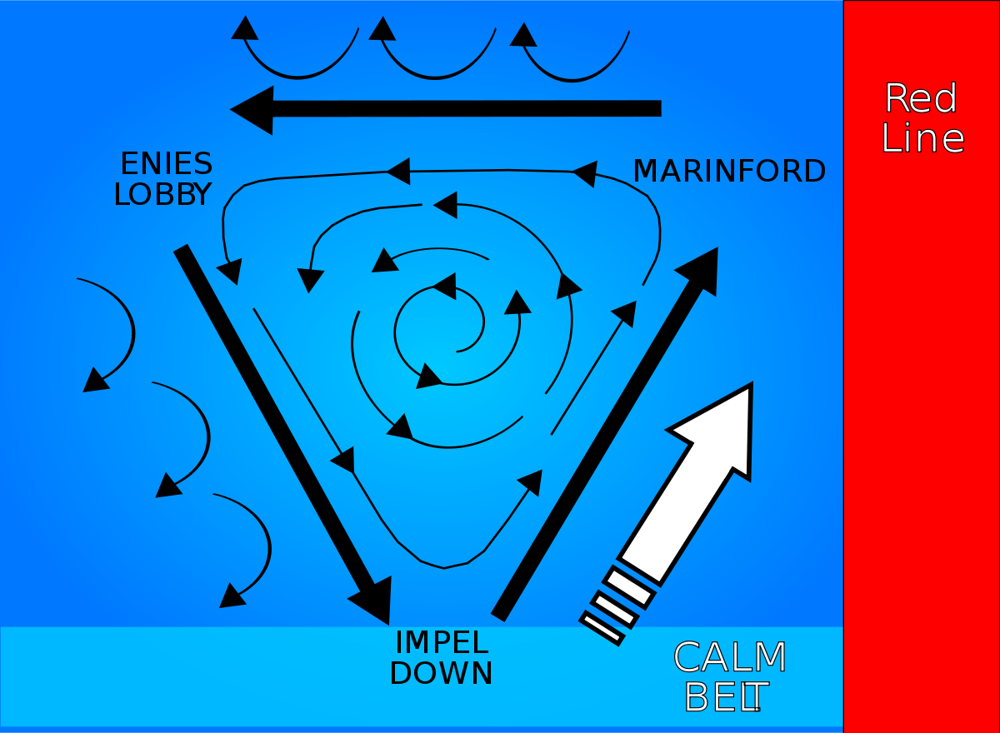

Le gouvernement mondial
La plus vieille organisation du monde, voilà comment est décrit le gouvernement mondial. Originellement fondé par les 20 familles créatrices, il réunit maintenant les 170 nations du monde. Il gère la géopolitique international en réunissant tout les 4 ans les dirigeants de ces nations afin de les faire discuter sur leur situation. Ce gouvernement s'est établi à Marijoa, la Terre Sainte, la seule ville perché au sommet de redLine. De ce fait, prenant de haut tous les autres humains, les descendants des familles créatrices sont devenus les tenryubito, dragons célestes. Des personnes comparés à des dieux pouvant faire ce que bon leur veut. Le groupe dirigeant le gouvernement, le Gorōsei, est composé de 5 doyens controlant la marine, le Cipher Pol et faisant des alliances avec les capitaines corsaires. Très mystérieux, ils semblent vouloir maintenir une paix dans le monde, mais surtout un équilibre perdurant depuis plus de 800 ans et cachant une vérité sur les D.
{kind=link}
Le courant Tarai est un courant ciruclaire reliant par voie maritime les trois points majeurs du gouvernement. Marineford, l'île où se situe le quartier général de la marine, Impel Down, la prison la plus sécurisée du monde où sont emprisonnés les pirates les plus dangereux, et enfin Enies Lobby, la tour de la justice, où sont emmenés les prisonniers pour être jugé. Chacune des trois île, réputées impénétrables, sont accessible par la porte de la justice mesurant plusieurs centaines de mètres et souvrant que pour les navires de la marine. Si un bateau entre dans le courant sans autorisation, il restera coincé pour toujours.
La marine
La marine est une armée maritime cherchant à garder une paix dans le monde en protégeant le peuple des pirates ou autres criminels. Mais derrière cette façade, se cache son affiliation au gouvernement mondial, donnant lieu à une justice autoritaire, prête à tout pour protéger le secret du siècle oublié. Elle dispose de grands moyens pour garder le controle sur le monde. Parmis les nombreuses bases disséminées sur le globe, son quartier général situé sur l'île de Marineford permet de réunir ses plus forts soldats. On y trouve les trois amiraux, soldats d'une puissance incroyable et d'une croyance en leur justice implacable, ils ont l'autorisation de faire appel à un Buster call, une flotte dévastatrice ayant pour but de raser une île de la carte.
Le Cipher Pol
Le Cipher Pol est la brigade de renseignement du gouvernement. Divisé en dix groupes, elles sont spécialisées dans l'espionnage avec des agents de terrain entrainés à l'art du Rokushiki, dit aussi les 6 pouvoirs.
Il s'agit de techniques permettant de repousser ses limites afin de valoir 100 hommes, mais aussi d'acquiérir un net avantage pour la discrétion. Parmis les dix groupes, deux sont mis en avant:
Le Cipher Pol n°9 est la brigade secrète, celle travaillant dans l'ombre. Se basant à Enies Lobby, cette équipe a pour habitude de se dissimuler dans la foule, allant même jusqu'à maintenir leur couverture pendant plusieurs années
pour mener à bien leur mission.
Le Cipher Pol Aigis-0, est la plus puissante agence de renseignement au monde. Son but va plutôt être de se renseigner sur les plus puissants pirates de Grand Line. Son arrivé sur une île ne présage rien de bon.
Les capitaines corsaires
Les 7 capitaines corsaires sont de puissants pirates de Grand Line ayant établi un marché avec le Gouvernement Mondial. Cet alliance leur permet d'annuler leur prime, donc de ne plus être poursuivi par la marine, mais en contre parti, ils doivent répondre aux appels du gouvernement lors de certains évenements. De plus, ils ne peuvent évidemment plus pillier les navires commerciaux, civils ou de la marine, et doivent contribuer à l'arrêt des nouveaux groupes de pirates. En général, ces pirates, décriés des autres comme non libres, établissent ce contract pour garder une tranquillité ou pour mettre à bien des plans sans être arrêté par le gouvernement.
Les 4 empereurs
Les quatres empereurs sont les plus puissants pirates de ce monde. Après avoir traversé de nombreuses fois les mers, ils sont allés s'installer dans le nouveau monde, la seconde partie de Grand Line, où chacun gouverne depuis son immense territoire. Ils ont la main prise sur les traffics. Leur flotte détient une puissance équivalente à toute la marine, et les batailles entre empereurs peuvent durer des journées entières.
Les révolutionnaires
Le groupe des révolutionnaires, est l'une des organisations les plus secrètes. Elle ne comporte pas de pirate mais de personnes étant à l'encontre des iées du gouvernement, la seule chose que l'on sait d'eux, est qu'ils ont pour objectif la destruction du gouvernement mondial, ainsi que de rétablir la vérité sur le siècle oublié afin d'apporter une liberté au peuple. Il s'agit de l'ennemi, numéro 1 du gouvernement puisque son chef est l'homme le plus rechercher au monde.